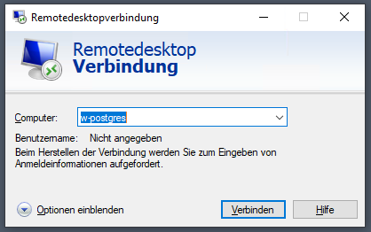
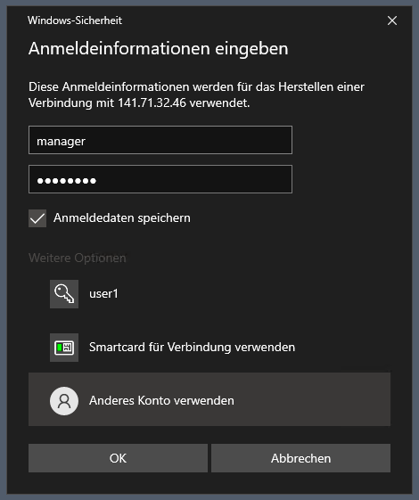
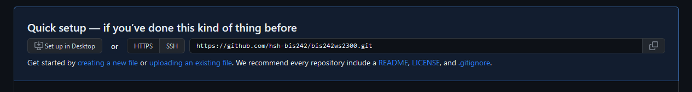
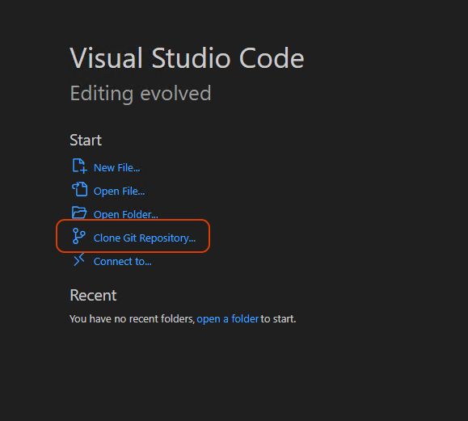
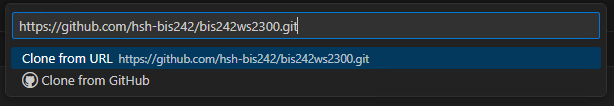
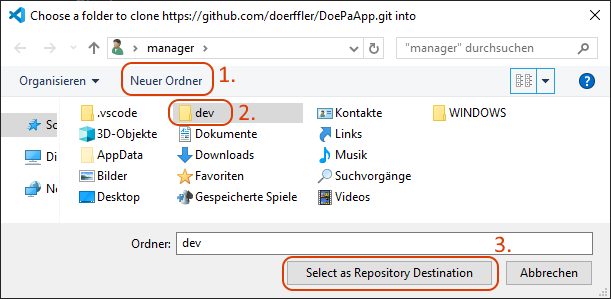
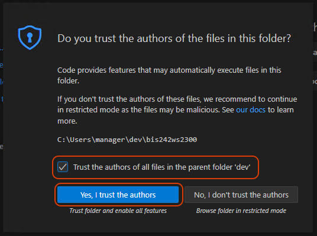

Bitte suchen Sie sich einen oder zwei Übungspartner und treten mit ihnen gemeinsam einer der leeren bereits in Moodle angelegten Gruppen (BIS2420X) bei:
Durch die Zugehörigkeit zu einer Übungsgruppe sollten Sie nun die für die Durchführung der Übung nötigen Zugangsdaten in Moodle anzeigen können:
Wir setzen git als Quellcodeverwaltungssystem für die Übungen ein. Unsere Git-Repositories verwalten wir über Github. Dazu benötigt mindestens ein Mitglied Ihrer Übungsgruppe einen Github-Account.
Gerne können Sie einen vorhanden privaten Github-Account für die Übungen verwenden. Ansonsten legen Sie einfach einen neuen Github-Account mit Ihrer HSH-Mailadresse an:
Sobald Sie einen Github-Account angelegt haben und dort eingeloggt sind, schreiben Sie bitte eine Mail mit dem Betreff Einladung zu HSH-BIS242, ihrem Git-Benutzernamen oder der registrierten Mailadresse, sowie Ihrer Moodle-Übungsgruppe an
timo.cirkel@hs-hannover.de:
Sie werden dann der Github-Organisation hinzugefügt und bekommen Zugriff auf ein Übungsrepository.
Die Zugangsdaten enthalten den Benutzernamen und das Passwort für eine Remotedesktopverbindung zum Übungsserver. Auf diesem absolvieren wir den Großteil der Übungen.
Stellen Sie innerhalb des Hochschulnetzwerkes (ggf. VPN-Verbindung herstellen) eine Remotedesktopverbindung mit dem Server w-postgres (bei fehlerhafter Namensauflösung, nutzen Sie die IP-Adresse 141.71.32.46) her.


Zum Abschluss der Übung testen Sie bitte den Zugriff auf das Github-Übungsrepository. Dazu öffnen Sie Ihr Repository auf Github:
Übersicht der Organisations-Repositories auf Github
Wählen Sie ihr Übungsrepository aus. Sie bekommen dort eine Clone-URL angezeigt. Kopieren Sie diese:

Nun klonen wir das Github-Repository auf den Übungsserver.
Wir empfehlen Ihnen die Übungen mithilfe der Entwicklungsumgebung Visual Studio Code umzusetzen. Diese ist auf dem Server vorinstalliert.
Öffnen Sie eine Remotedesktopverbindung zum Server und starten Sie die Software.
Direkt auf der Willkommensseite finden Sie den Link zum Klonen eines Git-Repositorys.

Nachdem Sie den Link auf der Willkommensseite angeklickt haben, öffnet sich eine Eingabeaufforderung, in welche Sie die vorher kopierte Clone-URL von Github einfügen. Und mit der Eingabetaste bestätigen.


Sie werden nun gebeten einen Speicherort auszuwählen, in den das Repository geklont wird. Wir empfehlen hierfür einen neuen Unterordner "dev" direkt in Ihrem Benutzerverzeichnis zu erstellen.
Git fordert Sie auf sich gegenüber Github zu authentifizieren.
Klicken Sie auf "Sign in with your browser". Geben Sie Ihre Github-Zugangsdaten ein und erlauben Sie ggf. den Zugriff auf Ihr Github-Konto.

Sobald Sie dazu aufgefordert werden, schließen Sie das Browserfenster. Betätigen Sie die Schaltfläche "Open" in Visual Studio Code.
Der Editor öffnet nun ihr (noch leeres) lokales Repository und fragt ob Sie den Inhalten in diesem Verzeichnis vertrauen. Bestätigen Sie das.